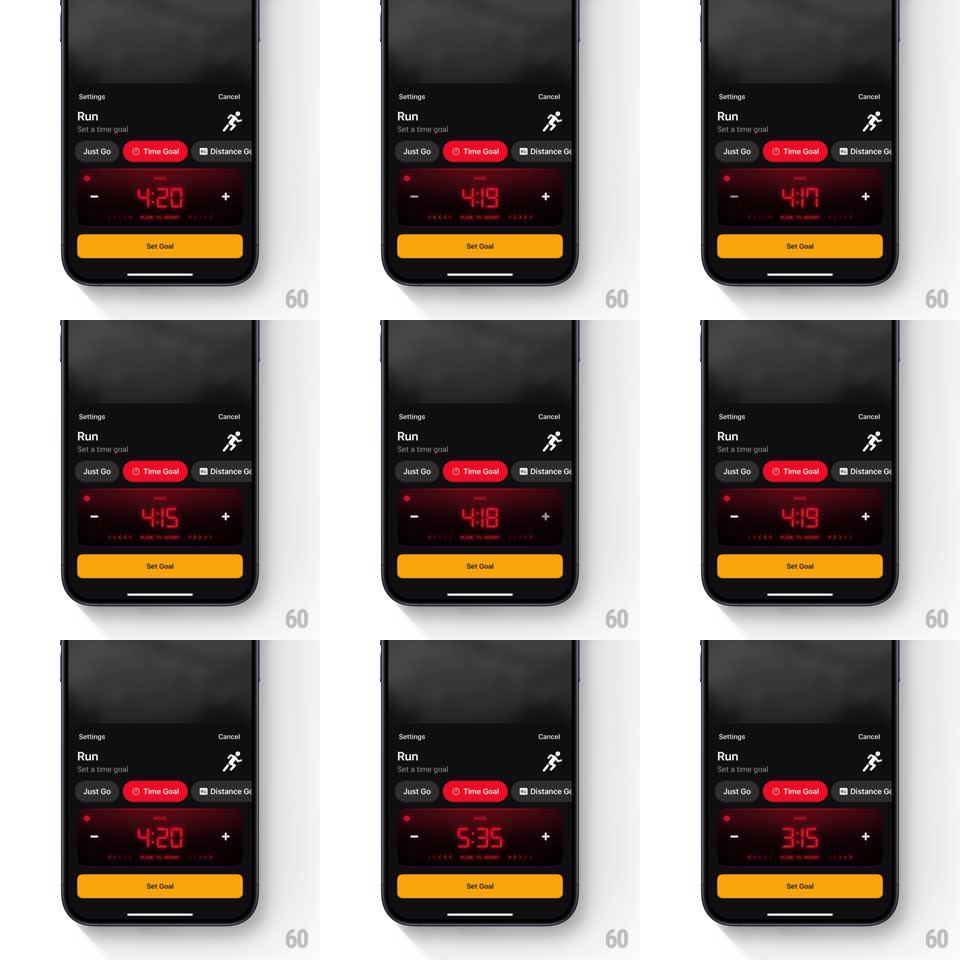

Media
Frame-by-frame

Rebuild this interaction 1:1: Any Distance's time-goal setter - glowing red LED digits you scrub horizontally or step with - / + buttons to set a workout time goal.

Rebuild this interaction 1:1: Any Distance's time-goal setter - glowing red LED digits you scrub horizontally or step with - / + buttons to set a workout time goal.
## Integration
Integration: stack-agnostic spec - springs given as stiffness/damping, timed motions as duration + curve; map every value to your framework and animation library of choice.
## Scene
Dark Run settings sheet ("Set a time goal", Just Go / Time Goal / Distance Goal pills, Time Goal active in red). Center: huge seven-segment LED-style red digits (4:20) on a subtle dark panel, flanked by circular - and + buttons. A yellow "Set Goal" button sits below.
## Motion spec
Pattern: horizontal scrub + stepper on LED readout.
- Drag horizontally across the digits: the time scrubs 1:1 with distance (full width ~ +-5 minutes); each digit flips seven-segment style - old segments fade out (60ms) as new ones fade in (80ms), with a faint red bloom trailing fast changes.
- Fling: the value coasts with decay (~0.92 per frame velocity damping) and settles on the nearest 10-second mark with a soft digit settle.
- Tap - or +: the value steps 10 seconds with a quick digit flip and a button press dip (scale 0.88, 120ms spring back); hold to repeat at accelerating rate (2/s ramping to 10/s over 1s).
- The LED glow pulses gently at idle (opacity +-6%, 2.4s loop) like real hardware.
- Set Goal flashes the digits once (brightness to 140% and back, 300ms) and dismisses the sheet.
## Calibration
- Digits use authentic seven-segment geometry with rounded segment ends and an inner glow - a plain red font is not the same object.
- Scrub, fling, and stepper all write to one value; no desync between drag and taps.
## Reduced motion
Digits change instantly; idle pulse off.
## Don't miss
- The colon blinks at 1Hz only while idle, never mid-scrub.
- The red is a deep LED crimson with bloom, not flat UI red.